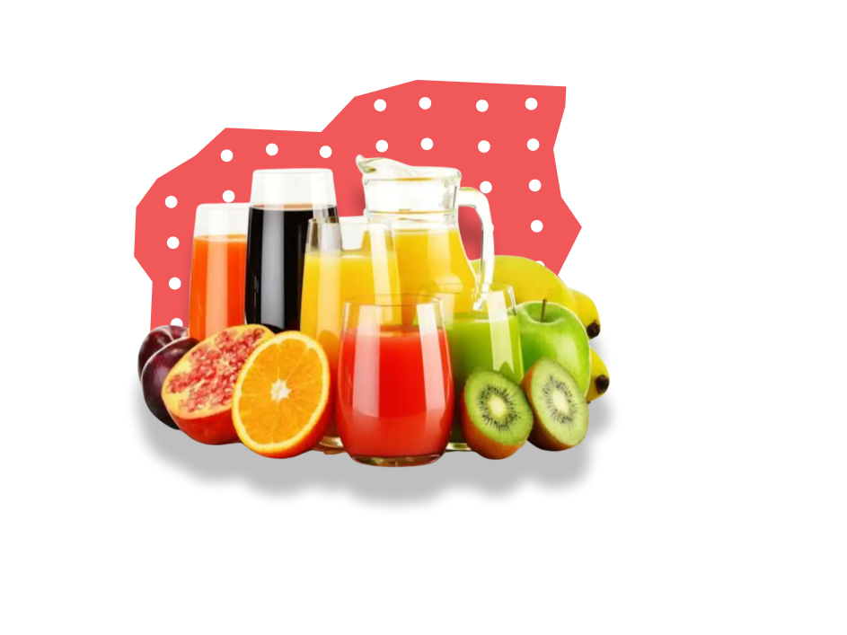

Nutrition

Our distributors offer personalized service to each center. PENNY JUICE is currently available in all 48 states. Our benefits, features, variety, service, and competitive pricing, make PENNY JUICE your first choice. "IT MAKES CENTS"

Our distributors offer personalized service to each center. PENNY JUICE is currently available in all 48 states. Our benefits, features, variety, service, and competitive pricing, make PENNY JUICE your first choice. "IT MAKES CENTS"